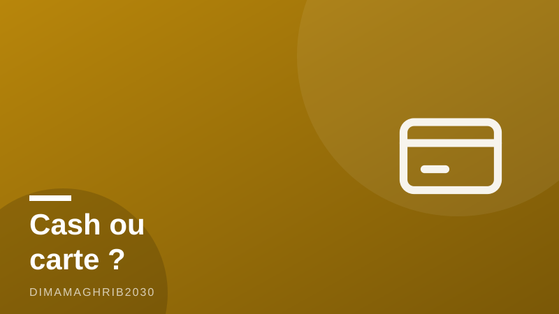

Cash ou carte au Maroc en 2026 ? Ce qu'un Marocain vous dirait vraiment avant de sortir votre CBCash or Card in Morocco in 2026? What a Local Friend Would Actually Tell You

On me pose la question chaque semaine, souvent par un ami de passage à Casablanca ou une cousine de France qui prépare ses vacances : cash ou carte au Maroc en 2026 ? Alors laissez-moi vous répondre comme je le ferais autour d'un thé, sans langue de bois. Oui, le pays se modernise à toute vitesse. Non, vous ne survivrez pas une journée dans la médina sans billets. Les deux sont vrais en même temps, et c'est tout le charme (et parfois l'agacement) du Maroc.
Depuis février 2026, on entend beaucoup parler du programme « Stay Cashless », lancé par le ministère du Tourisme avec Attijariwafa Bank et Visa, comme le rapportait Morocco World News : paiement sans contact directement sur le téléphone du commerçant, liens de paiement, conversion dynamique de devises pour les touristes. C'est réel, et ça avance. Le sans contact dépasse désormais 40 % des paiements par carte en magasin, un chiffre qui a plus que doublé en deux ans selon MEED. Mais voici la vérité que les brochures ne vous diront pas : d'après GlobalData, le cash représente encore environ 83,7 % du volume total des paiements dans le pays en 2026. Alors, le Maroc est-il cashless ? Pas encore, loin de là.
Où votre carte passe vraiment (et où elle ne sert à rien)
Payer par carte au Maroc, ça marche très bien dans un périmètre précis : les riads et hôtels, les grands restaurants, les malls, les supermarchés type Marjane ou Carrefour, les stations-service modernes. Travel And Tour World rappelle qu'il n'y a qu'environ 94 387 terminaux de paiement dans tout le pays, concentrés à Casablanca, Rabat et Marrakech. Traduction d'ami : dès que vous quittez ces bulles, sortez les dirhams. Dans les souks, chez le marchand de msemen, dans les petits cafés, les taxis, les hammams de quartier, c'est cash, point final. Et souvent, même quand un terminal existe, on vous dira qu'il est « en panne » — comprenez que le commerçant préfère éviter les commissions.
Retraits, frais et le fameux « pas de monnaie »
Parlons de retirer de l'argent au Maroc et des frais. Les distributeurs prélèvent généralement une commission fixe par retrait, en plus des frais de votre banque. Mon conseil : retirez de grosses sommes en une fois plutôt que des petits montants répétés, et quand le distributeur vous propose la conversion en euros, refusez toujours — choisissez « débiter en dirhams », le taux est nettement meilleur. Deuxième réflexe vital : gardez des petites coupures. Le classique « pas de monnaie » n'est pas toujours une arnaque, c'est parfois vrai, mais tendre un billet de 200 dirhams pour un thé à 15 dirhams, c'est s'exposer à une négociation que vous perdrez. Cassez vos gros billets au supermarché ou à la station-service.
Et Maroc Pay dans tout ça ?
Les Marocains, eux, paient de plus en plus par téléphone : l'écosystème Maroc Pay compte plus de 10 millions de portefeuilles mobiles actifs en 2026, selon ChariBaaS. Pour les touristes, Maroc Pay reste peu pratique — il faut généralement un compte ou une carte SIM locale — mais si vous restez plusieurs semaines, ça vaut le détour. Pour un séjour classique, ma formule gagnante : la carte pour l'hôtel et les grandes tables, une réserve de cash en petites coupures pour tout le reste, et quelques billets cachés dans une deuxième poche. Voilà mes conseils dirhams d'ami. Le Maroc de 2026 tape sa carte au centre-ville et compte ses pièces dans la médina — venez préparé pour les deux.
Every few weeks a friend visiting from abroad asks me the same thing before they land in Casablanca: paying in Morocco — cash or card? So let me answer you the way I'd answer them over mint tea, with zero tourist-brochure varnish. Yes, my country is modernizing fast. No, you will not survive a single day in the medina without banknotes. Both things are true at once, and that contradiction is very Moroccan.
You may have read about the shiny new "Stay Cashless" program, launched in February 2026 by the Ministry of Tourism together with Attijariwafa Bank and Visa, as Morocco World News reported: tap-on-phone payments, pay-by-link, dynamic currency conversion aimed squarely at tourists. It's real, and it's growing. Contactless now makes up over 40 percent of in-store card payments here, more than double what it was two years ago, according to MEED. But here's the honest part nobody puts in the press release: GlobalData estimates cash still accounts for roughly 83.7 percent of total payment volume in Morocco in 2026. So, is Morocco cashless? Not even close. It's cashless in pockets, cash-first everywhere else.
Where your card actually works
Cards work beautifully inside a specific bubble: riads and hotels, proper sit-down restaurants, shopping malls, big supermarkets like Marjane, modern petrol stations. Step outside that bubble and the picture flips. Travel And Tour World notes there are only about 94,387 POS terminals in the entire country, clustered in Casablanca, Rabat and Marrakech. In the souks, at the msemen stand, in small cafés, in petits taxis, at the neighborhood hammam — cash only, full stop. And a local secret: even where a card machine exists, you'll sometimes hear it's "broken." Often it works fine; the shopkeeper just prefers to skip the card fees. Don't argue, just pay cash and smile.
ATMs, fees, and the eternal "no change" problem
Some hard-earned Morocco ATM tips. Most machines charge a flat fee per withdrawal on top of whatever your home bank takes, so make fewer, larger withdrawals instead of grazing. And when the screen offers to convert your withdrawal into euros or dollars, always decline — choose to be charged in dirhams. That "convenient" conversion rate quietly costs you several percent. Then there's the national sport: "no change." Hand over a 200-dirham note for a 15-dirham coffee and you'll trigger a small diplomatic crisis. It's not always a hustle — small vendors genuinely run out of coins — but you'll lose that standoff either way. Break big notes at supermarkets and petrol stations, and hoard your 20s, 10s and coins like treasure.
What about Maroc Pay?
Meanwhile, Moroccans themselves are leapfrogging cards entirely: the Maroc Pay mobile-wallet ecosystem counts over 10 million active wallets in 2026, according to ChariBaaS. My cousin pays her vegetable guy by phone now. For Maroc Pay, tourists are still an awkward fit — you generally need a local account or SIM — but if you're staying a month or more, it's worth setting up. For a normal trip, here's my honest formula: card for the hotel, the nice dinners and the mall; a stash of small bills for absolutely everything else; and a backup note tucked in a second pocket. Morocco in 2026 taps its phone downtown and counts coins in the medina. Come ready for both, and you'll never get stuck.